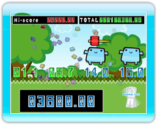
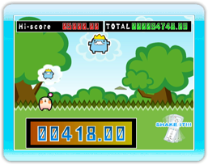
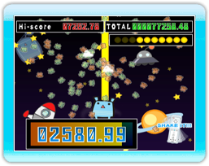

11 |
Minijuegos (1) |
 |
Presta atención al segundo recuento que aparece debajo de
Presta atención al bocadillo de diálogo que hay encima de
Mueve rápidamente el mando de Wii para disparar un rayo láser desde la parte inferior de la pantalla. Intenta esperar hasta que tus enemigos estén alineados en la pantalla antes de lanzar tu ataque, ya que obtendrás una mayor puntuación si eliminas a varios enemigos a la vez. Dispones de 10 rayos láser para hacer todo el daño que puedas a tus enemigos.
|


 |
 |
 |